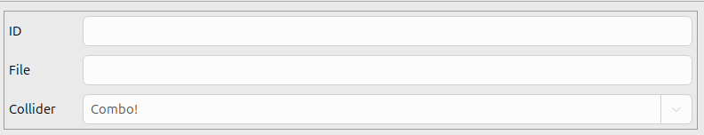
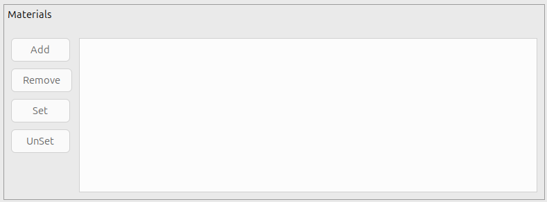
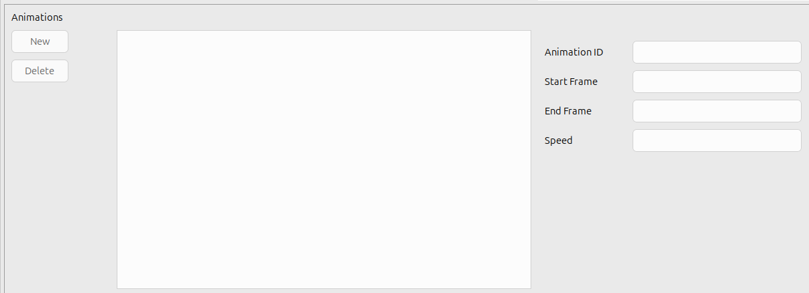

Serenity3D Mesh Editor
The mesh editor performs the following functions
-
Load Mesh from file
-
Create Mesh from a mesh primitive shape
-
Remove mesh from project
The mesh preview window has the same controls as the material preview. Hold the middle mouse button down and move the mouse left/right to rotate around the mesh.
In the ID panel, you can set the ID and choose a separate mesh for collision data.

-
ID - Must be a valid RCBasic variable
-
File - The file the mesh was loaded from
-
Collider - You can select another mesh to use for collision geometry
The material panel is where you can set materials for a mesh.

-
Add - Add a material to the mesh
-
Meshes can have more than one material if there are multiple materials on the 3D model
-
Remove - Removes the selected mesh
-
Set/UnSet - Sets or Clears a material slot
The animation panel is pretty simplistic. You can't modify any frames. You only assign which frames belong to an animation ID for reference in your project.

-
Animation ID - This is the name you want attached to the animation
-
Start Frame - The first frame of the animation
-
End Frame - The last frame of the animation
-
Speed - The speed in frames per second of the animation